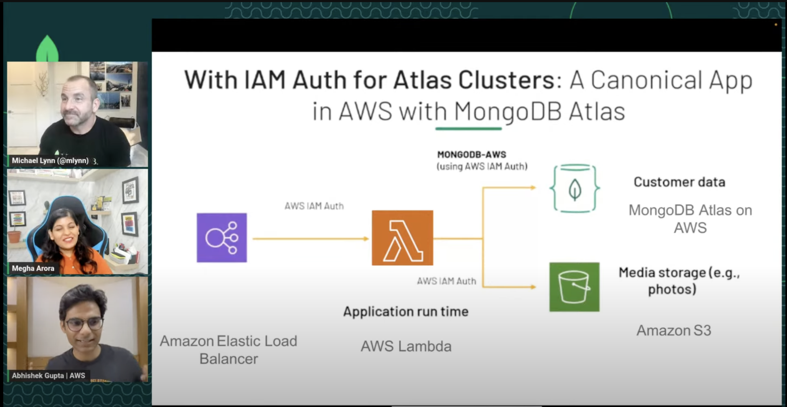

Presentations
Vector Databases for generative AI applications
This session covers Vector databases and how you can use them to build generative AI solutions along with popular frameworks such as LangChain, as well as fully-managed services like Amazon Bedrock.
Check out the blog post, slides, and GitHub repository.
Observability for builders (AWS Innovate 2023)
Observability is a practice that provides builders and developers with better insights into application behavior, enabling earlier identification, and rectification of application defects. This session outlines the steps to effective implementation of observability for modern applications, with multiple demos:
- Use AWS Lambda Powertools to add observability to a Serverless Java function
- Dive deeper with CloudWatch Logs Insights Query Language
- Configure CloudWatch Anomaly Detection to spot abnormal app behavior

Register here to watch the session and get access to all the materials including slides and demos.
Simplifying your Kubernetes infrastructure with cdk8s (AWS Dev Day 2023)
This talk will cover how you can use AWS CDK for Kubernetes (cdk8s) as an Infrastructure-as-Code (IaC) solution to simplify the development workflow of your Kubernetes applications.

You can check out the slides here
Building Serverless applications in Go (Golang Global Summit 2023)
Delighted to be part of an amazing speaker lineup at Golang Global Summit including folks from Google, Netflix and more!
This talk covers how to use Go for Serverless applications on AWS. Through hands-on examples, use-cases and demos, you will learn how to use Go with AWS Lambda, DynamoDB and other services in the Serverless ecosystem.
Slides are available here
Getting started with Amazon MemoryDB for Redis (Learn with AWS Experts)
Yet another Learn with AWS Experts session where I discussed open-source Redis and then dive into Amazon MemoryDB for Redis.

Go and Redis, Better Together 🤝 (Conf42 Golang 2023)
This talk demonstrates how Go and Redis can work well together and are (probably) built for each other - Simplicity, Speed and Developer-productivity being their driving principles. I intend to help simplify the learning curve and reduce friction for developers in their journey with Redis and Go
Slides are available here
MongoDB Atlas & AWS IAM Integration
A LinkedIn live show with MongoDB developer advocates where we discuss how to integrate AWS IAM to authenticate with MongoDB Atlas from AWS services. No slides. Just hands-on demos and discussions!

DynamoDB Go SDK (Learn with AWS Experts)
In this live stream, I dive into the DynamoDB Go SDK after providing a brief overview.
Slides are available here and they have links to relevant technical content including blog posts etc.
Amazon MemoryDB for Redis - Overview, architecture and use-cases
This talk is all about using Redis on AWS as a primary, durable database. It provides an overview of Amazon MemoryDB for Redis, how to get started along with practical examples and hands-on demos!

Slides are available here and they have links to relevant technical content including blog posts etc.
Data Ingestion Change Data Capture | Build On Live (Data & Analytics)
In this fun filled live episode, I discuss Kafka, Change Data Capture, Stream processing (and more) along with awesome folks!
Co-host | BuildOn OpenSource S2E5
Co-host of “BuildOn OpenSource S2E5” where we chat with special guest @a_cava94 about his love of automation and open source.

Let’s explore Apache Kafka, the Easy Way on AWS! (AWS User Group Mumbai)
Apache Kafka is powerful. But “with great power, comes great responsibility”! Fortunately, with Amazon MSK, developers can focus on how to build with Kafka instead of being responsible for managing a large-scale distributed system.
This session provides an overview of Amazon MSK (including its Serverless flavor) and MSK Connect. It will cover architecture along with hands-on demos to give you a better understanding of how to leverage Kafka on AWS to build practical solutions for everyday use cases.
Slides are available here
Co-host - AWS GameDay World Championship (Sep 2022)
AWS GameDay is a collaborative learning exercise that tests skills in implementing AWS solutions to solve real-world problems in a gamified, risk-free environment.
I co-hosted the AWS GameDay World Championship - APJ Qualifier 1, live streamed on Twitch
Are you ready to delete some YAML? (Agile India 2022)
What if you could replace YAML with good old code - the same way you write your applications? Well, cdk8s (short form for Cloud Development Kit for Kubernetes) is an open-source CNCF project, that you can use to define “Kubernetes applications and reusable abstractions using familiar programming languages and rich object-oriented APIs”
In this session, I discuss cdk8s and it’s workflow, how to define your first cdk8s application and building reusable components called “constructs”. You will also see “cdk8s in action” with some live-coding and demos!

Build Serverless apps with Go, AWS Lambda and friends
This hands-on, live-coding session covers how to build a Serverless application from scratch with the Go programming language (also known as Golang). It covers AWS Lambda, integration with DynamoDB and also demonstrates how to manage your Infrastructure-as-Code (IaC) aspects using Go and AWS CDK.
Kafka Summit Americas 2021: Extracting Value from IoT
An end to end near real-time analytics solution: Streaming IoT data needs to ingested at scale and processed in real-time. This needs to be made available for applications as well as analytics scenarios such as anomaly detection.
This workshop presents a solution using Confluent Cloud on Azure, Azure Cosmos DB and Azure Synapse Analytics which can be connected in a secure way within Azure VNET using Azure Private link.
The session recording, slides) are available online and the entire solution is there on GitHub for you to try out!

This was also presented as part of a larger IoT forum in partnership with Confluent
RedisConf 2021: Harnessing the power of Redis and Apache Kafka to crunch high-velocity time series data
This talk is all about how to combine the power of RedisTimeSeries and Apache Kafka to build scalable solutions that handle time series data. To illustrate these concepts, dive into an end-to-end implementation of a data pipeline on Azure and see it in action.
Kafka Summit Europe 2021: Using Kafka with Rust: from Zero to “One”
This introductory, yet hands-on session covers the nuts and bolts of how to talk to Kafka using Rust. Don’t worry if you’re not familiar with Rust! The live-coding session will cover some of the Rust basics as we walk through Kafka specific concepts such as producer/consumer APIs, committing offsets, rebalancing etc. in the context of the Rust client.
Session recording, Slides and Code
Near Real Time Analytics with Azure Synapse Link for Azure Cosmos DB. (Online Workshop)
Azure Synapse Link creates a tight seamless integration between Azure Cosmos DB and Azure Synapse Analytics. During this workshop, you’ll learn how to use Azure Synapse Link to analyse Azure Cosmos DB data.
GitHub repo: https://github.com/abhirockzz/cosmosdb-synapse-workshop
Change Data Capture, Streaming Audio podcast (with Tim Berglund)
This discussion breaks down the concept of CDC starting off with some of the core concepts such as “commit logs.” It then dives into how CDC can turn data around when you compare it to the traditional way of querying the database to access data—you don’t call the database; it calls you. We also discuss Debezium, which is an open source change data capture solution for Kafka. Finally, we chat about Azure connectors, Azure Data Explorer, and use cases powered by the Azure Data Explorer Sink Connector for Kafka.
Picking the Right Distributed Database
Databases are a critical part of any business. But, how do you pick the right one given the multitude of options at your disposal and new ones coming up quite frequently. Should you stick to good-old RDBMS, opt for NoSQL variants, or go multi-model? Is there really a right answer?
Check out this discussion to learn more!
Azure for Go developers
Go is an open source programming language known for its simplicity, performance and reliability. If you did not know it already, Azure has had first-class Go support for a while now! Come, learn about what’s possible with Go on Azure and how you can leverage it to build Cloud Native apps.
Slides are available here
Serverless Architectures and Patterns in Action
Slides are available here
Tour of Dapr: A Runtime for Microservices Development
Dapr (or Distributed Application Runtime) is a portable, event-driven runtime that makes it easy for developers to build resilient, microservice stateless and stateful applications that run on the cloud. This talk provides an overview of Dapr, how it works and enables distributed application development.
Slides are available here
Streaming Solutions for Real Time Problems (Java One 2017)
Microsoft Build (Virtual, 2020) - Expert Q&A: Azure Databases and Applications
https://mybuild.microsoft.com/sessions/32aadd70-58f4-48ad-b565-be0d9fe590e5